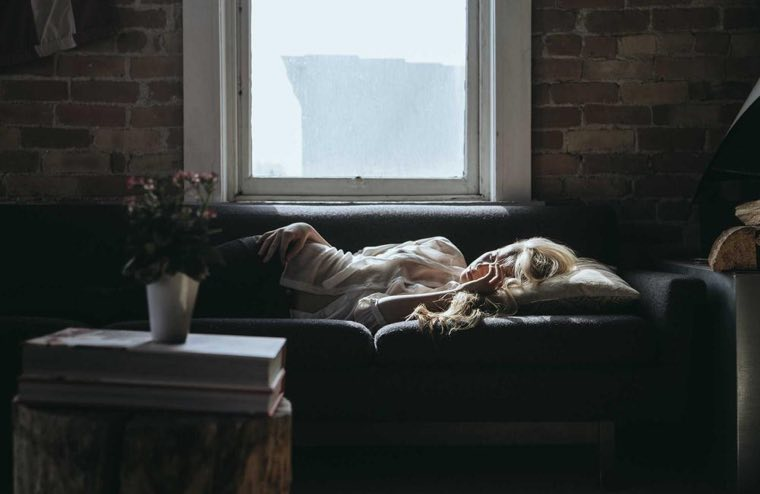
Locanda · Val di NonDodici stanze, un solo silenzioColazione col pane cotto in casa e vista sui meleti.Guarda le camere
still-split-plate-left
Split — plate a sinistra
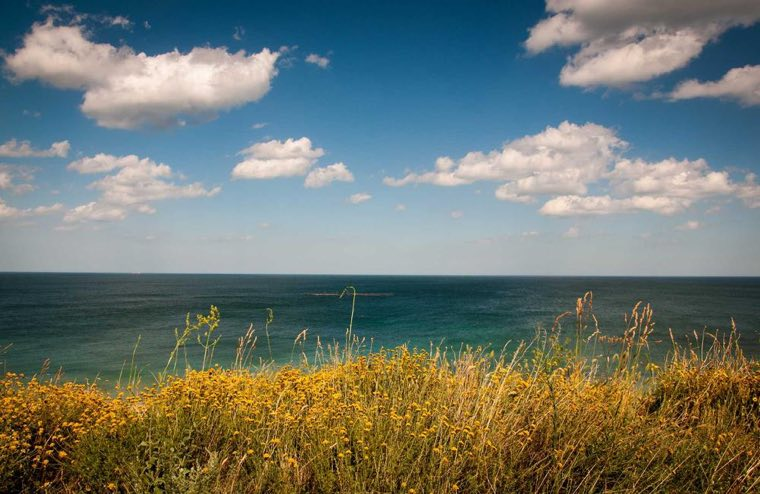
Positano · dal 1964La cucina che guarda il marePesce del giorno, terrazza sul golfo, tramonto compreso.Prenota un tavolo
still-split-plate-right
Split — plate a destra
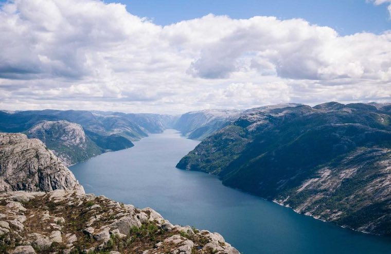
Rifugio · 2.140 mSi arriva a piedi. Si resta per la luce.Quattro camerate, cucina di montagna, stelle senza filtri.Prenota la notte
still-editorial-above
Editorial — titolo sopra la foto
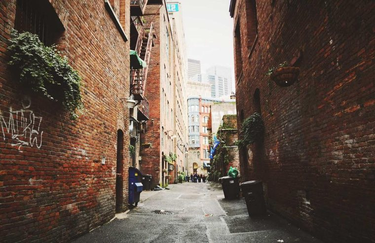
Trattoria · BolognaDue passi dentro il vicoloTagliatelle tirate a mano, vini che parlano dialetto.Scopri il menu
still-editorial-caption
Editorial — didascalia sotto
Locanda · Val di NonDodici stanze, un solo silenzioColazione col pane cotto in casa e vista sui meleti.Guarda le camere
still-inset-frame
Inset su carta
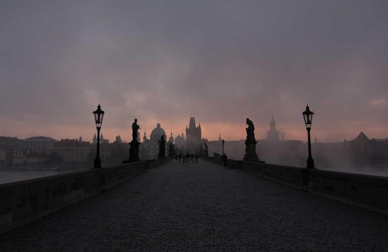
Cocktail bar · MilanoLa città si beve al buioGhiaccio scolpito, vermouth di casa, aperto fino a tardi.Vedi la carta
still-negative-left
Negative space a sinistra
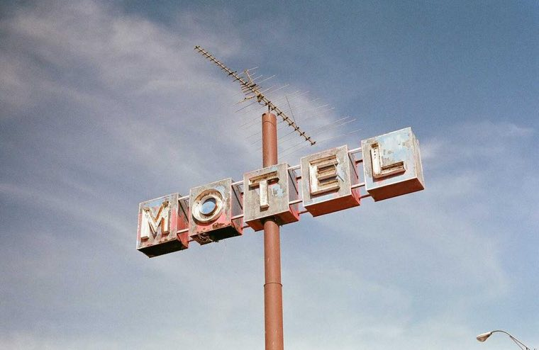
Motel · statale 16Insegna accesa, chiavi al bancoVentidue stanze, caffè alle sei, nessuna sorpresa.Camere e prezzi
still-negative-right
Negative space a destra
Positano · dal 1964La cucina che guarda il marePesce del giorno, terrazza sul golfo, tramonto compreso.Prenota un tavolo
still-wash-center
Velo chiaro centrato
Motel · statale 16Insegna accesa, chiavi al bancoVentidue stanze, caffè alle sei, nessuna sorpresa.Camere e prezzi
still-band-center
Fascia locale
Rifugio · 2.140 mSi arriva a piedi. Si resta per la luce.Quattro camerate, cucina di montagna, stelle senza filtri.Prenota la notte
still-plate-bottom-left
Plate d'angolo (poster)
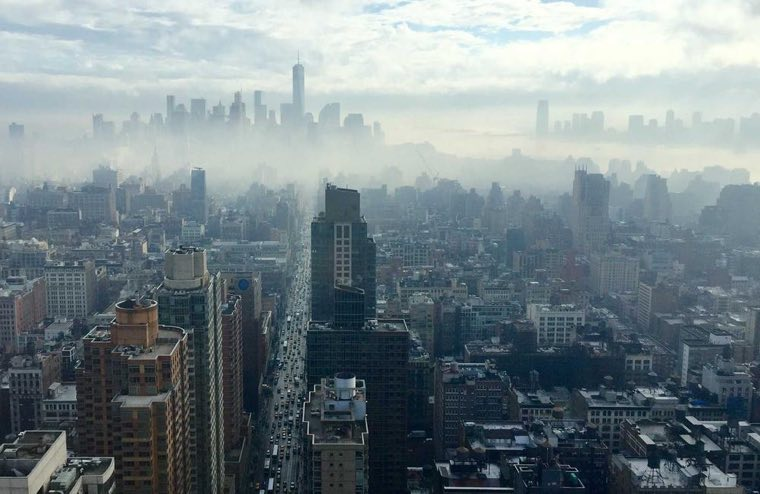
Piattaforma · revenueIl prezzo giusto, ogni notteTariffe dinamiche per hotel indipendenti, in un pannello solo.Prova la demo
still-duotone-knockout
Duotone + knockout
Trattoria · BolognaDue passi dentro il vicoloTagliatelle tirate a mano, vini che parlano dialetto.Scopri il menu
still-gradient-edge
Gradiente di un solo bordo
Locanda · Val di NonDodici stanze, un solo silenzioColazione col pane cotto in casa e vista sui meleti.Guarda le camere
still-glass-right
Pannello vetro a destra
Scuola sci · CortinaPrima neve, prima curvaMaestri per bambini e adulti, lezioni da un'ora.Prenota il maestro
still-mask-arc
Foto mascherata (arco)
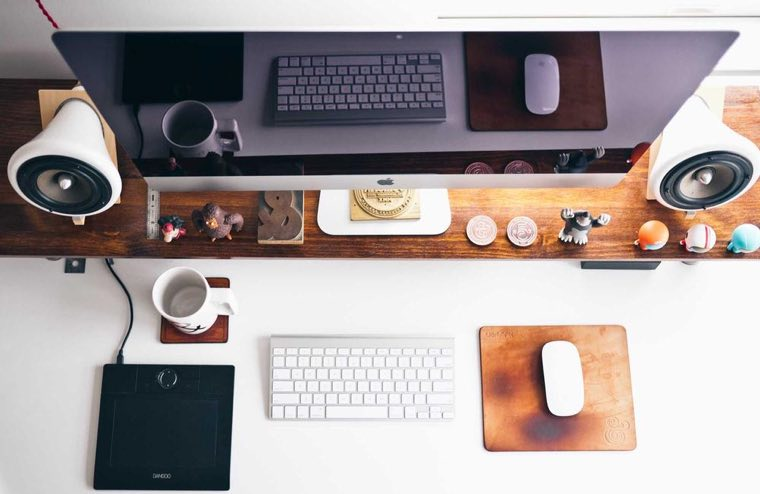
Studio di design · TorinoProgettiamo cose che restanoIdentità, siti, packaging. Un progetto per volta.Guarda i lavori
still-offset-overlap
Blocco che scavalca la foto
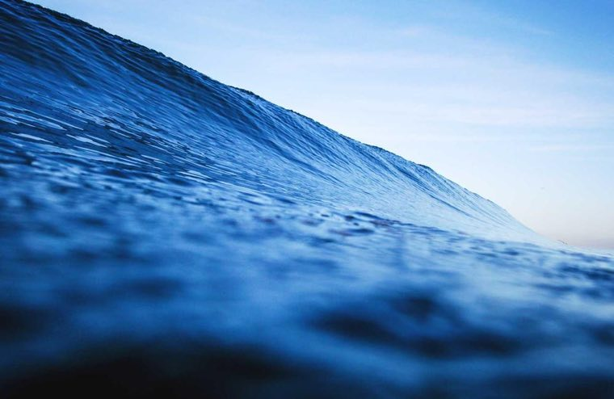
Scuola di vela · PonenteImpari il vento in due giorniCorsi per adulti e ragazzi, barche pronte in banchina.Scegli il corso
still-bottom-anchor
Full-bleed ancorata in basso
Positano · 1964Positano · dal 1964La cucina che guarda il marePesce del giorno, terrazza sul golfo, tramonto compreso.Prenota un tavolo
still-rail-vertical
Rail verticale + foto
Locanda · Val di NonDodici stanze, un solo silenzioColazione col pane cotto in casa e vista sui meleti.Guarda le camere
carousel-crossfade-plate
Carosello crossfade — testo fermo
Trattoria · BolognaDue passi dentro il vicoloTagliatelle tirate a mano, vini che parlano dialetto.Scopri il menu
carousel-hard-slide
Carosello hard-slide — testo per slide
Scuola sci · CortinaPrima neve, prima curvaMaestri per bambini e adulti, lezioni da un'ora.Prenota il maestro
carousel-split-static
Carosello solo sul lato foto
01/04Positano · dal 1964La cucina che guarda il marePesce del giorno, terrazza sul golfo, tramonto compreso.Prenota un tavolo
carousel-peek
Carosello con peek
01/04Rifugio · 2.140 mSi arriva a piedi. Si resta per la luce.Quattro camerate, cucina di montagna, stelle senza filtri.Prenota la notte
carousel-thumbs
Carosello con rail di miniature
Studio di design · TorinoProgettiamo cose che restanoIdentità, siti, packaging. Un progetto per volta.Guarda i lavori
carousel-deck
Deck di card che avanza
Scuola di vela · PonenteImpari il vento in due giorniCorsi per adulti e ragazzi, barche pronte in banchina.Scegli il corso
carousel-vertical
Carosello verticale
Trattoria · BolognaDue passi dentro il vicoloTagliatelle tirate a mano, vini che parlano dialetto.Scopri il menu
carousel-marquee
Striscia continua invece di slide
Cocktail bar · MilanoLa città si beve al buioGhiaccio scolpito, vermouth di casa, aperto fino a tardi.Vedi la carta
video-ambient-plate
Video ambient + plate
Locanda · Val di NonDodici stanze, un solo silenzioColazione col pane cotto in casa e vista sui meleti.Guarda le camere
video-inset-window
Video in finestra rientrata
Scuola di vela · PonenteImpari il vento in due giorniCorsi per adulti e ragazzi, barche pronte in banchina.Scegli il corso
video-split
Video su metà schermo
PonenteScuola di vela · PonenteCorsi per adulti e ragazzi, barche pronte in banchina.Scegli il corso
video-type-mask
Video dentro la tipografia
3 loopTrattoria · BolognaDue passi dentro il vicoloTagliatelle tirate a mano, vini che parlano dialetto.Scopri il menu
video-micro-loops
Tre micro-loop invece di un film
Cocktail bar · MilanoLa città si beve al buioGhiaccio scolpito, vermouth di casa, aperto fino a tardi.Vedi la carta
video-cover-cta
Video full-bleed + CTA
Studio di design · TorinoStudio FiloIdentità e siti per chi fa cose vere.Guarda i lavori
type-first-vw
Type-first in vw nudi
Piattaforma · revenueIl prezzo giusto, ogni notteTariffe dinamiche per hotel indipendenti.Prova la demo
text-solid-brand
Solo testo su tinta di brand
Archivio · 1908–oggiCento anni di carte, una stanzaConsultazione su appuntamento, sala lettura al primo piano.Prenota la sala
text-rule-paper
Solo testo su carta rigata
Festival · 12–15 giugnoQuattro notti di musica in cavaVenti concerti, navette dal centro, biglietti a scaglioni.Compra il biglietto
text-mesh-light
Luce radiale come sfondo
Studio legale · VeronaDiritto del lavoro, senza giriAssistiamo imprese e persone nei contenziosi e nei contratti.Fissa un incontro
text-diptych
Dittico di testo
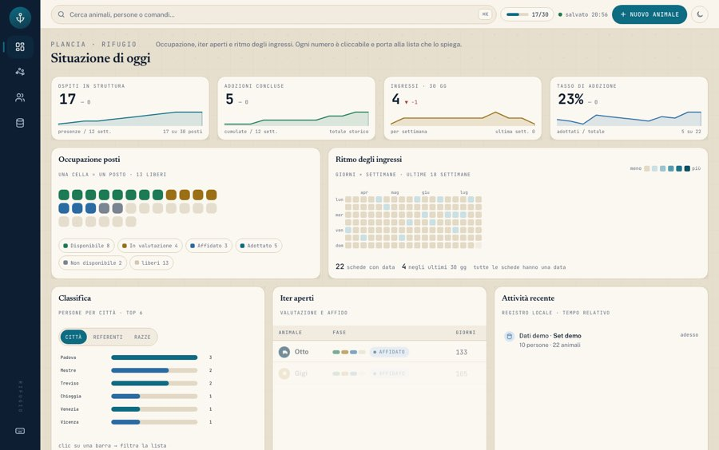
Gestionale · rifugiOgni numero porta alla lista che lo spiegaOccupazione, iter di adozione e ritmo degli ingressi in un pannello.Prova la demo
ui-product-right
Hero prodotto — UI a destra
Gestionale · rifugiOgni numero porta alla lista che lo spiegaOccupazione, iter di adozione e ritmo degli ingressi in un pannello.Prova la demo
ui-product-bleed
Hero prodotto — UI che sborda
Locanda · Val di NonDodici stanze, un solo silenzioColazione col pane cotto in casa e vista sui meleti.Guarda le camere
collage-mosaic
Mosaico di più foto
Scuola di vela · PonenteImpari il vento in due giorniCorsi per adulti e ragazzi, barche pronte in banchina.Scegli il corso
sequence-scroll
Sequenza legata allo scroll
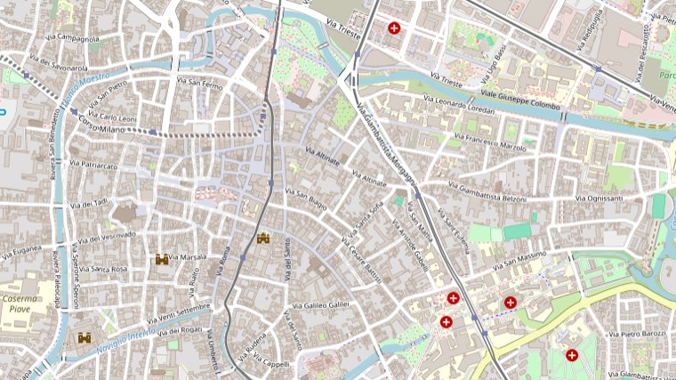
Noleggio bici · PadovaTi aspettiamo in Riviera Tiso 4Aperto 8–19, ritiro e riconsegna in dieci minuti.Apri in mappa
map-place-plate
Mappa del luogo come media
Trattoria · BolognaDue passi dentro il vicoloTagliatelle tirate a mano, vini che parlano dialetto.Scopri il menu
compare-before-after
Prima / dopo
Positano · dal 1964La cucina che guarda il marePesce del giorno, terrazza sul golfo, tramonto compreso.Prenota un tavolo
fullbleed-header-reveal
Full-bleed senza nav (header reveal)
Dove vuoi andareCercaPiattaforma · revenueIl prezzo giusto, ogni notteTariffe dinamiche per hotel indipendenti, in un pannello solo.
search-center-plate
Barra di ricerca al centro
ArrivoPartenza2 ospitiVerificaLocanda · Val di NonDodici stanze, un solo silenzioColazione col pane cotto in casa e vista sui meleti.
booking-bar-hotel
Barra di prenotazione (date + ospiti)
12stanze1964dal4.9recensioniRifugio · 2.140 mSi arriva a piedi. Si resta per la luce.
stat-trio-photo
Tre numeri come protagonisti
Dal 2011Costruiamo la parte che i vostri clienti toccano.Design e front-end per aziende che vendono cose serie.
logo-wall-claim
Claim + muro di loghi
“Ghiaccio scolpito, vermouth di casa, aperto fino a tardi.Gambero RossoCocktail bar · MilanoLa città si beve al buio
quote-review-full
Citazione come hero
Crudo del giorno24Spaghetti al riccio22Sorbetto al cedro9Trattoria · BolognaDue passi dentro il vicoloScopri il menu
price-list-menu
Listino dentro la hero
La tua emailIscrivitiStudio di design · TorinoProgettiamo cose che restanoIdentità, siti, packaging. Un progetto per volta.
form-lead-wash
Velo chiaro + form di contatto
04giorni11ore38minCocktail bar · MilanoLa città si beve al buioGhiaccio scolpito, vermouth di casa, aperto fino a tardi.
countdown-event
Conto alla rovescia
01Le stanze02La cucina03Il giardinopassa il mouseLocanda · Val di NonDodici stanze, un solo silenzio
index-hover-list
Indice numerato che rivela
2026Guida MichelinMotel · statale 16Insegna accesa, chiavi al bancoVentidue stanze, caffè alle sei, nessuna sorpresa.Camere e prezzi
badge-award-corner
Sigillo di riconoscimento
+2.400 ospitiStudio di design · TorinoProgettiamo cose che restanoIdentità, siti, packaging. Un progetto per volta.
avatars-proof
Prova sociale con volti
Positano · dal 1964La cucina che guarda il marePrenota un tavolo
bento-grid
Bento — griglia di riquadri
Rifugio · 2.140 mSi arriva a piedi. Si resta per la luce.Quattro camerate, cucina di montagna, stelle senza filtri.
columns-parallax
Colonne a velocità diverse
Scuola sci · CortinaPrima neve, prima curvaMaestri per bambini e adulti, lezioni da un'ora.Prenota il maestro
angled-split
Taglio diagonale
Locanda · Val di NonDodici stanze, un solo silenzioColazione col pane cotto in casa e vista sui meleti.
frame-passepartout
Passepartout
Trattoria · BolognaDue passi dentro il vicoloTagliatelle tirate a mano, vini che parlano dialetto.Scopri il menu
stack-polaroid
Foto impilate
Studio di design · TorinoProgettiamo cose che restanoGuarda i lavori
scatter-desk
Foto sparse sul piano
Scuola di vela · PonenteImpari il vento in due giorniCorsi per adulti e ragazzi, barche pronte in banchina.Scegli il corso
half-fold-duo
Due mondi, metà esatta
Motel · statale 16Insegna accesa, chiavi al bancoVentidue stanze, caffè alle sei, nessuna sorpresa.Camere e prezzi
Rifugio · 2.140 mSi arriva a piedi. Si resta per la luce.Quattro camerate, cucina di montagna, stelle senza filtri.
arc-bottom-mask
Arco che sale dal fondo
Scuola sci · CortinaPrima neve, prima curva
corner-type-xl
Tipografia enorme + foto d'angolo
Positano · dal 1964La cucina che guarda il marePrenota un tavolo
magazine-cover-xl
Copertina — titolo che scavalca
Piattaforma · revenueIl prezzo giusto, ogni notteTariffe dinamiche per hotel indipendenti, in un pannello solo.
strip-top-editorial
Striscia di foto in alto
Forno dal 1948Pane, ogni mattina alle sei.Dove siamo
arc-type-seal
Testo su tracciato curvo
Gestionale · rifugiOgni numero porta alla lista che lo spiegaOccupazione, iter di adozione e ritmo degli ingressi in un pannello.Prova la demo
ui-tilt-perspective
UI in prospettiva
Gestionale · rifugiOgni numero porta alla lista che lo spiegaOccupazione, iter di adozione e ritmo degli ingressi in un pannello.Prova la demo
ui-device-duo
Desktop + mobile
Gestionale · rifugiOgni numero porta alla lista che lo spiegaProva la demo
ui-window-glass
Finestra flottante su vetro
Noleggio bici · PadovaTi aspettiamo in Riviera Tiso 4Aperto 8–19, ritiro e riconsegna in dieci minuti.Apri in mappa
map-fullbleed-pins
Mappa piena con più punti
Studio di design · TorinoProgettiamo cose che restanoIdentità, siti, packaging. Un progetto per volta.Guarda i lavori
compare-vertical
Prima / dopo verticale
Scuola di vela · PonenteImpari il vento in due giorniCorsi per adulti e ragazzi, barche pronte in banchina.
sequence-horizontal
Sequenza in striscia
Trattoria · BolognaDue passi dentro il vicoloTagliatelle tirate a mano, vini che parlano dialetto.Scopri il menu
video-portrait-reel
Video verticale
Cocktail bar · MilanoLa città si beve al buioVedi la carta
video-grain-type
Video + grana + titolo grande
01/04010203Scuola sci · CortinaPrima neve, prima curvaPrenota il maestro
carousel-steps-counter
Carosello a tappe numerate
01/04Positano · dal 1964La cucina che guarda il marePesce del giorno, terrazza sul golfo, tramonto compreso.Prenota un tavolo
carousel-fullbleed-quiet
Carosello pieno, comandi discreti
Scuola di vela · PonenteImpari il vento in due giorniCorsi per adulti e ragazzi, barche pronte in banchina.
wash-editorial-top
Velo chiaro + titolo in alto
Rifugio · 2.140 mSi arriva a piedi. Si resta per la luce.Quattro camerate, cucina di montagna, stelle senza filtri.Prenota la notte
glass-panel-left
Pannello vetro a sinistra
Nessun archetipo con questi filtri.